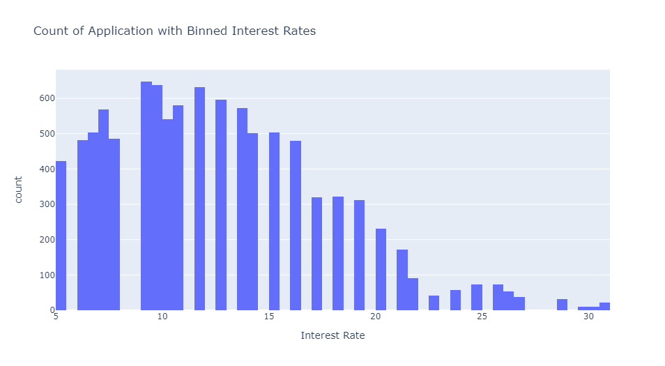
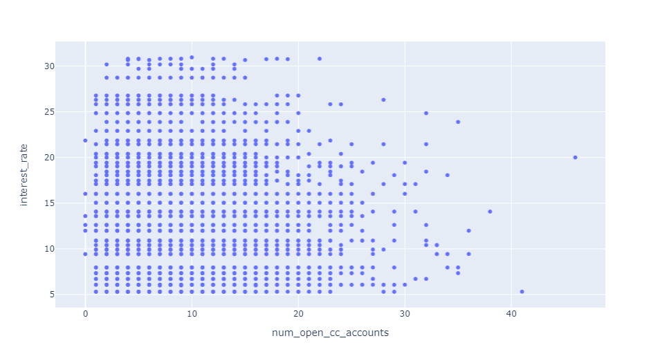

Case Study 1¶
This study had the goal of predicting interest rates, using data from Lending Club, a peer-to-peer lending platform.
EDA¶
Below are visualizations which give insight into the dataset, giving clues as to which approaches may be successful for interest rate prediction.
Geographic Loan Distribution¶

The number of loan applications looks to be roughly proportional to the overall population of the state. We will remove state from consideration as a feature, as it would result in 50 extra features, one-hot encoded. This would result in unnecessarily long training times.
Interest Rate Distribution¶
{kind=link}
Interest rate follows what looks to be a rough beta distribution. The graph looks
to be missing bars, which led to the observation that interest rate is, in fact, a
categorical variable. This was confirmed online. This was also
confirmed by grouping sub_grade in the data, and displaying interest rates. Part
of that table is shown below.
Sub-grade |
Interest Rates |
|---|---|
A1 |
[5.23, 5.31] |
A2 |
[6.08, 6.07, 6.0] |
A3 |
[6.72, 6.71] |
A4 |
[7.34, 7.35] |
A5 |
[7.96, 7.97] |
sub_grade needs to be removed from our feature set. In a practical application, if we
have access to sub-grade, a simple rule-based model will yield near perfect
predictions as the mapping to interest rate is almost one to one. The decision to
leave or keep this feature would depend on the model use case in real life. In
this case study, I exclude it, as a ML model learning a near one-to-one mapping
is wasteful (and frankly boring), and it is much more interesting to try and use the
rest of the rich feature set to predict interest rates.
A Note on application_type¶

85% of applications are individual. This makes sense, as the features
related to joint applications, annual_income_joint, verification_income_joint,
debt_to_income_joint all had around 85% of their values missing.
Identifying Possible Relations¶
{kind=link}

There look to be weak and possibly non-linear relations between both
num_open_cc_accounts and total_debt_limit and interest_rate.
Preprocessing¶
Preprocessing consisted of the following:
Deletion of bloated/useless features
emp_title: there are apx. 4500 of these titles. Not very insightful w/o further processingstate: see EDA
Deletion of grade-related features
gradeandsub_grade: see EDA
One-hot Encoding of Categorical Features
Allows model to work with non-numerical data
Train/Test Split
20% of the data used as a validation set
Given more time, would evaluate models using cross-validation
These pre-processing steps were performed for both the train set, and test set, but separately as to not introduce unintended biases to the model.
Null Value Replacement
For values in the columns
{'emp_length', 'debt_to_income', 'annual_income_joint', 'debt_to_income_joint'}, null values were replaced with the feature meanFor values in the columns
{'months_since_last_delinq', 'months_since_90d_late', 'months_since_last_credit_inquiry'}these were filled with a number of months equivalent to 150 years, much longer than a normal human lifespanAll other values were filled with 0
Standardization
Training sets were standardized
Interest Rate Prediction as a Classification Problem¶
Initially, I approached this a classfication problem. Below is a table of model results on the validation set (0-1 Loss). Evidently, this approach was a spectacular failure.
Model |
Validation Score |
|---|---|
SVC |
11.70% |
KNN(k=3) |
5.75% |
NN |
4.05% |
Neural net used linear layers with ReLU activation functions.
Interest Rate Predicion as a Regression Problem¶

I then approached the problem as a regression. This proved more fruitful. I only had the time to run one approach, a NN, which resulted in a RMSE on the validation set of 2.97 percentage points. With more time I would run more regression models to try and find a better solution. The RMSE while training is shown above.
Including sub_grade and grade¶

As mentioned in the EDA, including sub_grade and grade greatly improved model RMSE,
resulting in a validation RMSE of 0.407 percentage points. The RMSE while training is shown above.
Assumptions Made¶
sub_gradeandgradeshould not be used in interest rate predictionAll features required to accurately predict interest rate are contained within the dataset
The treatment of null-values as described in the pre-processing section results in good model performance. This is something else I would experiment with given time